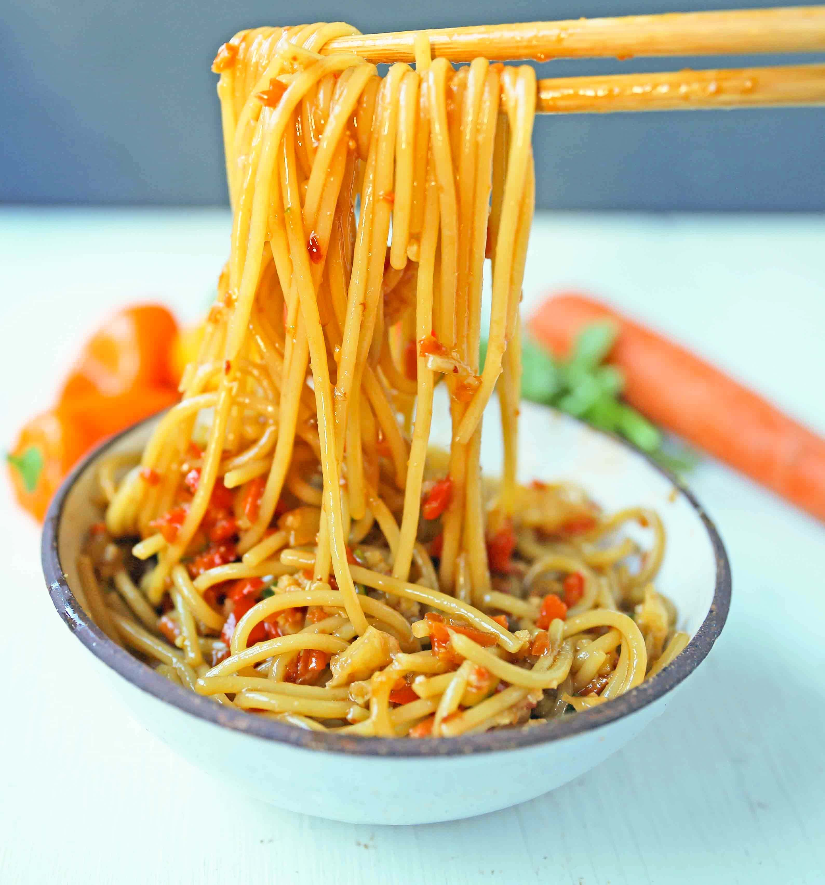

Steaming and aromatic, a plate of stir-fry noodles is a testament to the balance between tradition and innovation. From bustling street markets to cozy kitchens, this dish transcends cultural boundaries, offering a taste of the meticulous craft behind its creation. As you savor its symphony of flavors and textures, you're invited to partake in a culinary journey that celebrates the magic that happens when simplicity meets expertise in a single sizzling wok.
Stir-fry noodles are a whirlwind of taste and texture, where tender noodles mingle with an array of crisp vegetables and protein, all coated in a flavorful sauce. This quick and skillful cooking technique brings together the best of both worlds, offering a medley that's satisfying and visually appealing. The stir-fry sauce, a magical concoction of soy, ginger, and garlic, infuses every ingredient with a burst of umami, making each bite a delightful surprise. From the bustling kitchens of Asian street vendors to cozy home setups, stir-fry noodles evoke a sense of culinary adventure that's as accessible as it is delicious.